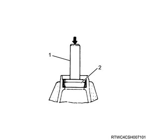
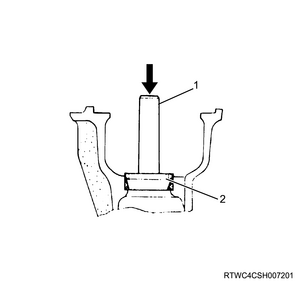
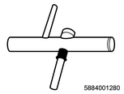
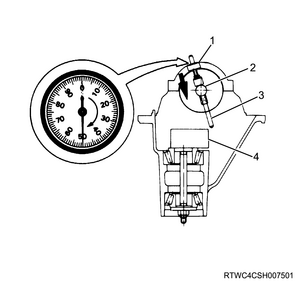
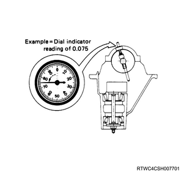
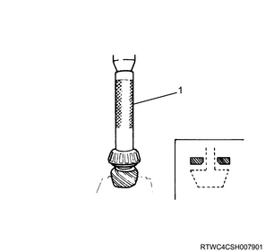
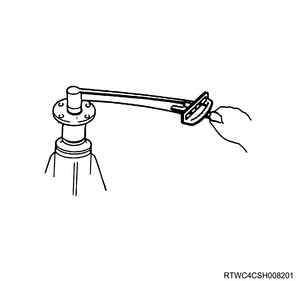
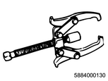
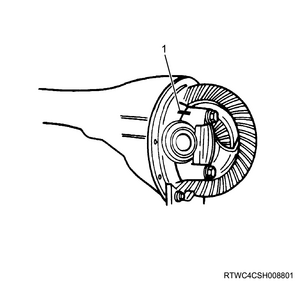
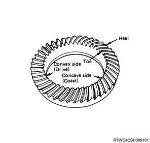

Front differential assembly reassembly (All models)
1. Outer bearing installation
1. Install the outer bearing to the differential carrier using special tool.
Note
- Install the outer bearing outer race to the differential carrier using a grip and installer.

SST: 5-8840-0007-0 - grip
SST: 9-8522-1141-0 - bearing installer

- Grip
- Bearing installer
2. Inner bearing installation
1. Install the inner bearing to the differential carrier using special tool.
Note
- Install the inner bearing outer race to the differential carrier using a grip and installer.
SST: 9-8522-1274-0 - bearing installer
SST: 5-8840-0007-0 - grip

- Grip
- Bearing installer
3. Shim adjustment
1. Adjust the shim.
Note
- Adjust the drive pinion mounting distance.
- Apply gear oil to the inner and outer bearings.
- Clean the pinion adjustment gauge set.
- Install the inner and outer bearings to the differential carrier together with the adjustment gauge set.

SST: 5-8840-2085-0 - pilot
SST: 5-8840-2089-0 - stud & nut
SST: 5-8840-2087-0 - gauge plate
- Pilot
- Bolt and nut
- Gauge plate
Note
- Tighten the adjustment gauge set nut to the specified torque.
Tightening torque： 2.3 N・m { 0.23 kgf・m / 20 lb・in }
Note
- Clean the side bearing installation section, and install the disc and arbor and a dial gauge.
- Install the bearing cap and tighten the bolt to the specified torque.
Tightening torque： 98 N・m { 10.0 kgf・m / 72 lb・ft }

SST: 5-8840-0126-0 - dial indicator
SST: 5-8840-2088-0 - disc

SST: 5-8840-0128-0 - arbor
SST: 5-8840-2087-0 - gauge plate
- Dial gauge
- Disk, 2 pcs.
- Arbor
- Gauge plate
Note
- Set the dial gauge to 0, make it contact the arbor plunger portion, and then press it down and hold when the gauge needle rotates approximately half-way in the clockwise direction.

- Dial gauge
- Arbor
- Plunger
- Gauge plate
Note
- Place the arbor's plunger tip on the top of the gauge plate, and slowly move the arbor back and forth to find out the position where the fluctuation width of the dial gauge is maximized.
- In this position, set the dial gauge to 0 again.
- Repeat the same procedure to confirm 0 setting.

Note
- After completing the 0 setting, turn the arbor and remove the plunger tip from the gauge plate.
- Record the value on the dial gauge.

Note
- Record the pinion depth code marked on the top of the drive pinion.
- A positive value means that the engagement depth is larger that the specified value. Decrease the shim thickness and adjust.
- A negative value means that the engagement depth is smaller that the specified value. Increase the shim thickness and adjust.
- If the depth code of the pinion is 0, no adjustment has been made.

Note
- Select a shim from the table below.
Note
- Before placing an order for shims, check the shim thickness indicated in the above table and identify an appropriate part number in the parts catalog.
2. Remove special tool from the differential carrier.
4. Shim installation
1. Install the shim to the drive pinion gear using special tool.
Note
- Install a shim and an inner bearing to the drive pinion using a pinion bearing installer and press.
- Assemble the shim with the chamfered side facing the pinion head.
Caution
- Pressurize the inner race only and do not pressurize the roller gauge.

SST: 9-8522-1165-0 - pinion bearing installer

- Pinion bearing installer
5. Collapsible spacer installation
1. Install the collapsible spacer to the drive pinion gear.
Note
- Make sure to use a new collapsible spacer.
6. Drive pinion gear installation
1. Install the drive pinion gear to the differential cage.
7. Oil seal installation
1. Install the oil seal to the differential carrier using special tool.
Note
- Use the oil seal installer to install the oil seal to the differential carrier.
- Use a new oil seal and apply lubricating oil.
SST: 9-8522-1275-0 - oil seal installer
Caution
- Take care not to mix-up the front differential oil seal and rear differential oil seal.

- Oil seal installer
8. Flange installation
1. Install the dust cover to the flange.
2. Install the flange to the drive pinion.
Note
- Apply lubricating oil to the screw thread of the pinion, and install the flange and flange nut.
- Tighten the flange nut to the specified torque using a flange holder.

SST: 5-8840-0133-0（J-8614-11） - flange holder
Tightening torque： 177 to 275 N・m { 18.0 to 28.0 kgf・m / 131 to 203 lb・ft }
Caution
- Use a new flange nut.
- Flange holder
9. Drive pinion gear adjustment
1. Adjust the preload.
Note
- Measure the pinion bearing preload using a torque meter.
- Tighten the flange nut so as to attain the specified starting torque.
Starting torque: 0.63 to 1.13 N·m {0.06 to 0.12 kgf·m / 5 to 10 lb·in}

10. Shim adjustment
Note
- Adjust the backlash of the ring gear.
1. Adjust the shim.
Note
- Install the side bearing without shims to the differential cage using a special tool.
- Support the differential cage using an adapter to avoid damaging the bearing on the opposite side.

SST: 9-8522-1164-0 - side bearing installer
SST: 5-8840-0007-0 - grip
SST: 9-8521-1743-0 - adapter
- Grip
- Side bearing installer
- Adapter
Note
- Install the bearing outer race and differential cage assembly to the differential carrier.
Note
- Using 2 sets of the feeler gauge, insert them between the left and right bearing outer races and the carrier assembly until the backlashes become 0.
- Each feeler gauge must be pressed in up to the bottom of the bearing installation section.
- Install the dial gauge to the differential carrier until it touches the ring gear tooth surface at a right angle.
SST: 5-8840-0126-0 - dial indicator
- Dial gauge
Note
- Adjust the right and left feeler gauge thicknesses so that the backlash of the ring gear reaches the standard value.
Specified backlash： 0.13 to 0.18 mm { 0.005 to 0.007 in }
Note
- When the backlash is adjusted to the standard value, remove each feeler gauge and determine shim thickness.
- To provide a preload with the side bearings, install a shim thicker than the measured shim thickness by 0.05 mm {0.002 in}.
- Use new shims.
2. Remove the side bearing from the differential cage using special tool.

SST: 5-8840-0013-0 - bearing puller
SST: 9-8521-1743-0 - adapter
- Bearing puller
- Adapter
3. Install the shim to the differential cage.
Note
- Install the selected shims.
11. Bearing installation
1. Install the side bearing to the differential cage using special tool.
SST: 9-8522-1164-0 - side bearing installer
SST: 5-8840-0007-0 - grip
SST: 9-8521-1743-0 - adapter
- Grip
- Side bearing installer
- Adapter
Note
- Install the side bearing outer race.
12. Front differential cage installation
1. Install the differential cage to the differential carrier.
2. Install the bearing cap to the differential carrier.
Note
- Align the alignment marks that were made during disassembly to install.

- Alignment mark
Note
- Install the cap bolt, and tighten to the specified torque.
Tightening torque： 98 N・m { 10.0 kgf・m / 72 lb・ft }

13. Front differential ring gear adjustment
1. Measure the front differential ring gear using a dial gauge.
Note
- Measure the fluctuation of the backside of the front differential ring gear.
Standard： 0.02 mm { 0.001 in }
Limit： 0.05 mm { 0.002 in }
2. Inspect the front differential ring gear.
Note
- Thinly apply red lead primer or equivalent to the tooth surfaces of the 7 or 8 ring gears, and then gently rotate the drive pinion gear in the forward and reverse directions to inspect the tooth contacts.
- Thinly apply red lead primer or equivalent on 7 or 8 teeth of the ring gear, and then gently turn the drive pinion gear in the advancing and retracting directions to inspect tooth contacts.
- If there is an abnormality in tooth contact, adjust it according to the procedure described in the diagram.
